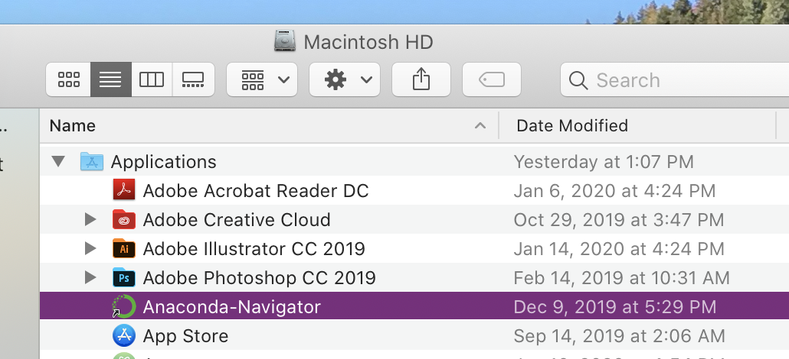
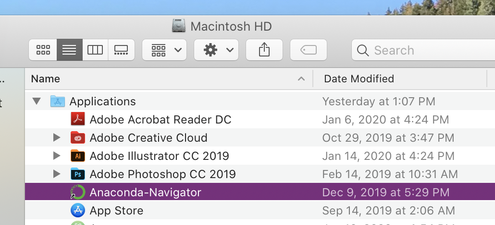

Install Python & JupyterLab¶
We’re going to install Python by installing Anaconda, a “distribution” that comes with basic Python as well as over 250 popular Python packages that are already pre-installed. These packages, sometimes called libraries, are collections of code written by other people for specific purposes. We can install and use them on top of basic Python. Anaconda includes packages such as pandas for data analysis, matplotlib for data visualization, and perhaps most importantly JupyterLab for interactive coding.
Anaconda is also a package manager and environment manager. This functionality helps address a common problem that occurs when working with Python packages: when different versions of the same package conflict and break your code. If you’re trying to use a tool that relies on an older version of pandas, for example, but you have the most upgraded version, it might break your tool. We won’t spend a lot of time using Anaconda as a package manager and environment manager, but it’s good to know that this functionality exists.
Step 1 - Install Anaconda¶
Go to the Anaconda installation page, find your operating system, and follow the instructions.
Step 2 - Find and Open Anaconda Navigator¶
Make sure Anaconda is installed by finding the application “Anaconda Navigator” on your computer. You should be able to find it by searching through your applications.
 

Step 3 - Launch JupyterLab¶
Once Anaconda Navigator opens, you can launch JupyterLab by clicking the “Launch” button.

Step 3 (Alternative) - Launch JupyterLab¶
You should also be able to launch JupyterLab from a Terminal or Powershell by running:
jupyter lab
Installing VSCode¶
Though we’re mostly going to be programming in Jupyter notebooks, we’re also going to install a code editor called VSCode, where you can also write, edit, and test Python code.
Step 1 - Install VSCode¶
Go to VSCode’s home page, click download (it should know which OS you’re using), and follow the instructions.
Step 2 - Install Python extension¶
Install Python extension (it may automatically prompt you to install the Python extension)
from IPython.display import IFrame
IFrame("../videos/VSCode-Tutorial.mp4", width='100%', height='400px')
(Optional) Installing Variable Inspector¶
If you want, you can install a special extension for JupyterLab called Variable Inspector, which will allow you to view currently active Python variables — basically, it will give you a better window into what’s going on behind the scenes when you’re coding.
Step 1 - Install Variable Inspector¶
To install Variable Inspector, please open your Terminal or Powershell and enter the following:
pip install lckr-jupyterlab-variableinspector
Step 2 - Restart JupyterLab¶
Then restart your JupyterLab application.
Step - Open Variable Inspector¶
To use Variable Inspector, right-click in a Jupyter notebook and select “Open Variable Inspector.” You can drag and drop it to the bottom of your screen for convenience.
from IPython.display import IFrame
IFrame("../videos/Variable-Inspector-Demo.mp4", width='100%', height='400px')